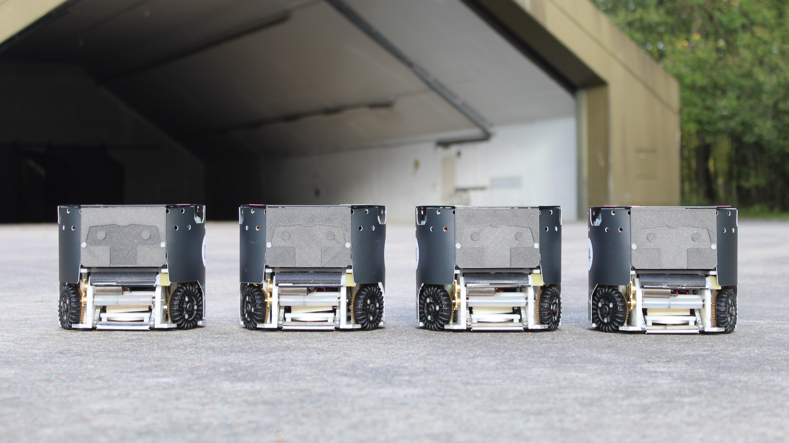

RoboTeam Twente
Innovation and Inspiration in Robotics and Artificial Intelligence

About Us
RoboTeam Twente is a multidisciplinary team of students from the University of Twente and Saxion Hogeschool Enschede. We aspire to innovate in both robotics and Artificial Intelligence. Next, we want to inspire everyone for these two sectors and show the world what can be achieved with them. We believe robotics and Artificial Intelligence can make the world a better place if used correctly. Our medium to achieve these goals is the RoboCup. We will compete at the world championship of robot soccer in which two teams of eleven small robots will compete with each other. 2022 is the sixth year the team participates in the RoboCup. The team consists of students from different backgrounds, such as Mechanical Engineering, Electrical Engineering, Biomedical Engineering, Computer Science, Advanced Technology and Creative Technology.
Technical information
The robots of RoboTeam Twente are 15 cm high and have a diameter of 18 cm. On the top of the robot is the cap with brightly coloured dots, unique to every robot. These are there for the camera’s and software to recognise where the robot is on the field. Below the cap, there is the electronics, which make sure that the robot can receive signals from the computer and that all motors are controlled, among others. The battery, the bright blue box, is essential for the robot to work and provides all the power it needs. In the bottom of the robot, we find the components for driving and ball handling. In the front, we have a rotating bar, which is called the dribbler, which enables the robots to drive with the ball. Below this, we find the kicker, which kicks the ball straight over the floor, and the chipper, that scoops the ball through the air. The omnidirectional wheels can all be steered independently of each other, which enables the robot to drive in all directions. This saves space and is really fast, which is very beneficial during the games!

Educational
RoboTeam Twente offers workshops for all ages and levels in programming. During the workshops, participants will be building and programming their own robots from scratch! With fun challenges and small competitions the workshops are engaging for everyone. Whether you have never programmed before, or are an expert software developer, the workshops are adaptive and interesting for any level. The workshops are done using MBots. MBots are very user friendly build-your-self robots. They have several different sensors with which they can sense the world around them. They can be programmed either using a drag and drop interface, this is a very intuitive and easy to grasp way of getting started very quickly with building your own robot. Another way the robots can be programmed is the programming language C. With the use of a library we developed ourselves, it is very easy to get started while still using a full on programming language.